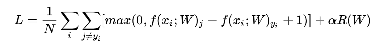
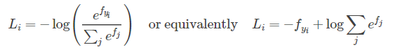
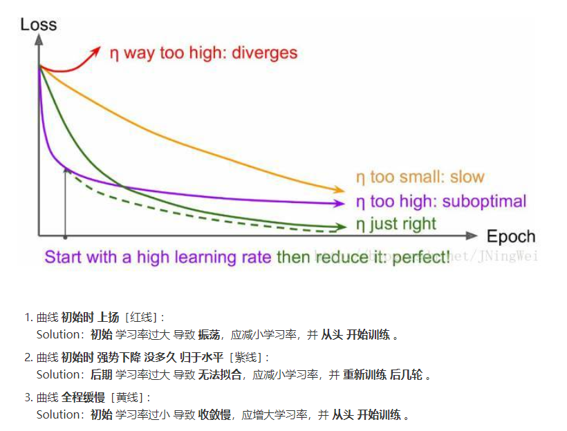

Details about this assignment can be found on the course webpage, under Assignment #1 of Spring 2017.
计算每个train样本与每个test样本的距离，得到一个dist矩阵
距离使用L2
一些技巧：
若为的，则为的，即dist的第行
计算L2善用完全平方公式
numpy中多用shape和reshape已确定好矩阵的大小
argsort函数
[:k]可选取前k大的数据bincount函数
list[i]的值表示i出现的次数argmax函数
消除维度为1的维，除了用squeeze外，还可用list中的[:,0]
a = np.array([[1,2,3],[4,5,6]])print(a.shape) # (2,3)a = a.reshape(-1,1)print(a.shape) # (6,1)a = a[:,0]print(a.shape) # (6,)plt画散点图
xfor k in k_choices: accuracies = k_to_accuracies[k] plt.scatter([k] * len(accuracies), accuracies) # plt.scatter中传入列表，可以绘制多个点，在重复实验中绘图很有用# 绘制平均线和error bar（即误差条）accuracies_mean = np.array([np.mean(v) for k,v in sorted(k_to_accuracies.items())])accuracies_std = np.array([np.std(v) for k,v in sorted(k_to_accuracies.items())])plt.errorbar(k_choices, accuracies_mean, yerr=accuracies_std)
涉及图像计算，首先归一化，同时注意保存mean_image的值
为了不计算bias只计算weight，在所有数据集后面加一列1
loss公式：
这里 1表示
使max(0,-)保证了零阈值
矩阵导数的求法：参考https://zhuanlan.zhihu.com/p/24709748

plt画图
xxxxxxxxxxmarker_size = 100 # 圆点的大小尺寸colors = [results[x][0] for x in results] # 这里colors即要画的点的值，即不同状态下的acc值#results值：#{(1e-07, 25000.0): (7.796751353602664e-06, 0.394),#(1e-07, 50000.0): (7.565597667638484e-06, 0.368),#(5e-05, 25000.0): (3.3177842565597667e-06, 0.154),#(5e-05, 50000.0): (1.0399833402748854e-06, 0.054)}x_scatter = [math.log10(x[0]) for x in results]y_scatter = [math.log10(x[1]) for x in results]# 这是横纵坐标值，是不同状态下lr和reg的值#x_scatter:[-7.0, -7.0, -4.301029995663981, -4.301029995663981]plt.subplot(2, 1, 1)plt.scatter(x_scatter, y_scatter, marker_size, c=colors) # 传入的值colors应该是各点对应的，可以传入一个序列，colors[i]对应(x_scatter[i],y_scatter[i])点处的颜色plt.colorbar()plt.xlabel('log learning rate')plt.ylabel('log regularization strength')plt.title('CIFAR-10 training accuracy')plt.show()# plot validation accuracycolors = [results[x][1] for x in results] # default size of markers is 20plt.subplot(2, 1, 2)plt.scatter(x_scatter, y_scatter, marker_size, c=colors)plt.xlabel('log learning rate')plt.ylabel('log regularization strength')plt.title('CIFAR-10 validation accuracy')plt.show()IPython在调用类方法时自动更新：
xxxxxxxxxx# for auto-reloading extenrnal modules# see http://stackoverflow.com/questions/1907993/autoreload-of-modules-in-ipython%load_ext autoreload%autoreload 2np.linalg.norm(x, ord=None, axis=None, keepdims=False)可用来求取范数
涉及log计算时可以将部分运算转化为加法或减法，防止溢出

交叉熵在计算exp时，可以使用f -= np.max(f)来防止溢出
grad的计算涉及到矩阵求导，求导要比前面的简单
可视化方法：
画出acc和loss图像，分析图像变化过程
In most neural networks trained on visual data, the first layer weights typically show some visible structure when visualized.
即将第一层的参数可视化显示出学习的东西
xxxxxxxxxx# 整体操作W1 = net.params['W1'] # (3072, 50)W1 = W1.reshape(32, 32, 3, -1) # (32, 32, 3, 50)W1 = W1.transpose(3, 0, 1, 2) # (50, 32, 32, 3)# 即前三维应该是一个图形的三维，最后一维可看成是图像的个数，所以将其提前# 借鉴函数# 偷偷吐槽:为啥不先转置后变化图形,明明更容易理解...(结果应该相同)# 即:# W1 = net.params['W1'].transpose().reshape(-1 ,32, 32, 3)def visualize_grid(Xs, ubound=255.0, padding=1): """ Reshape a 4D tensor of image data to a grid for easy visualization. Inputs: - Xs: Data of shape (N, H, W, C) - ubound: Output grid will have values scaled to the range [0, ubound] - padding: The number of blank pixels between elements of the grid """ (N, H, W, C) = Xs.shape grid_size = int(ceil(sqrt(N))) grid_height = H * grid_size + padding * (grid_size - 1) grid_width = W * grid_size + padding * (grid_size - 1) grid = np.zeros((grid_height, grid_width, C)) next_idx = 0 y0, y1 = 0, H for y in range(grid_size): x0, x1 = 0, W for x in range(grid_size): if next_idx < N: img = Xs[next_idx] low, high = np.min(img), np.max(img) grid[y0:y1, x0:x1] = ubound * (img - low) / (high - low) # grid[y0:y1, x0:x1] = Xs[next_idx] next_idx += 1 x0 += W + padding x1 += W + padding y0 += H + padding y1 += H + padding # grid_max = np.max(grid) # grid_min = np.min(grid) # grid = ubound * (grid - grid_min) / (grid_max - grid_min) return grid盲目增大 Batch_Size 有何坏处？
PCA
HOG
HSV
feature.py文件中增加了部分阅读时的注释，可供复习使用

batch_size增大时，lr也应该增大